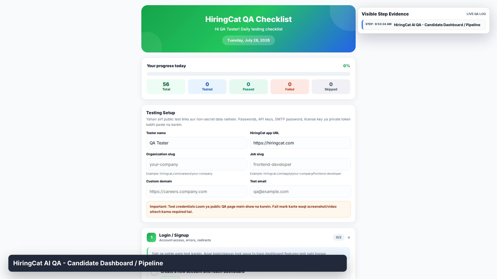
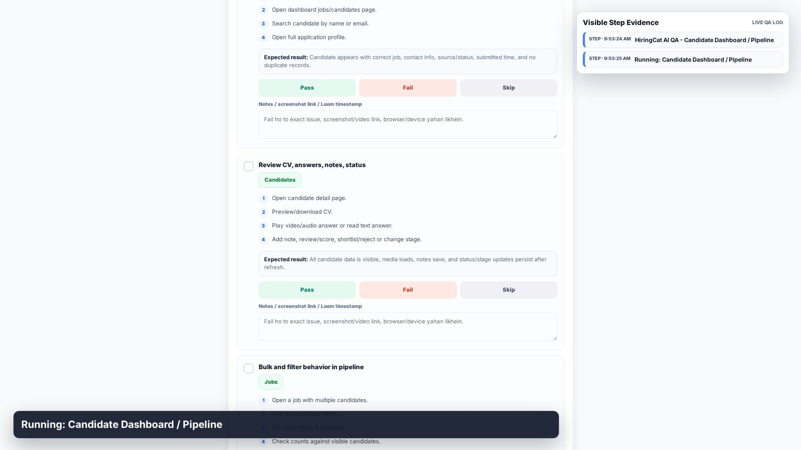
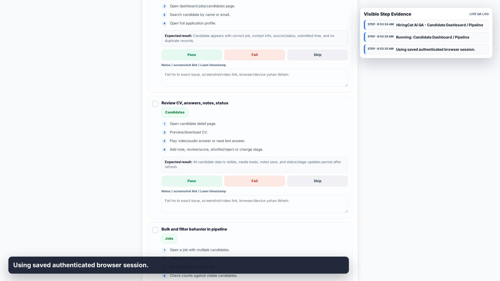
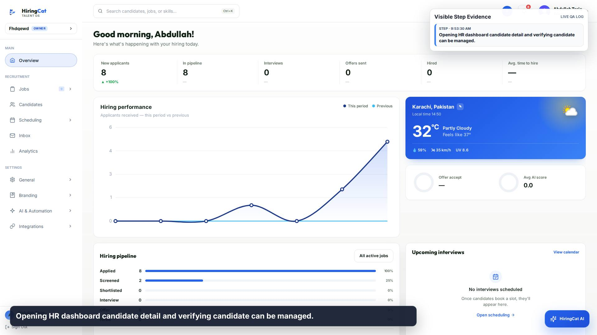
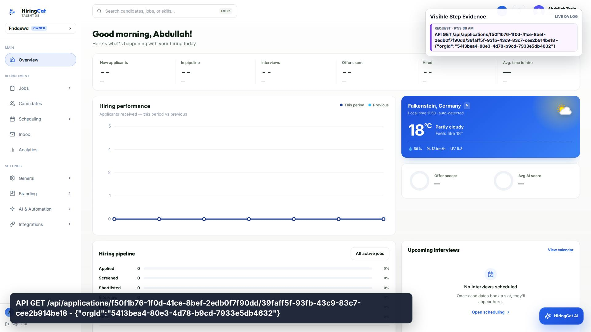
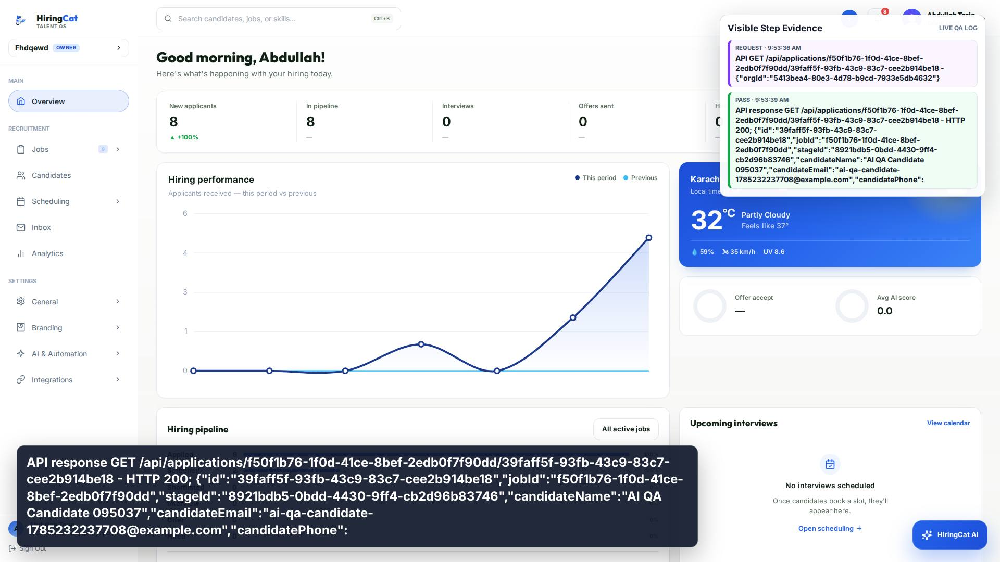
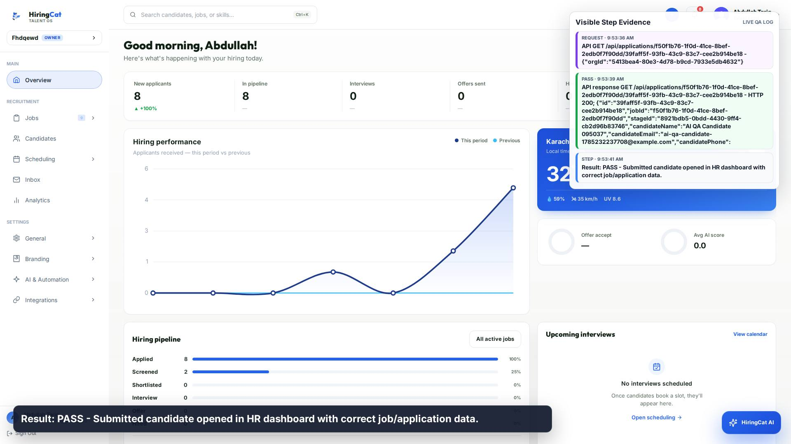

1. STEP
HiringCat AI QA - Candidate Dashboard / Pipeline

HiringCat AI QA - Candidate Dashboard / Pipeline

Running: Candidate Dashboard / Pipeline

Using saved authenticated browser session.

Opening HR dashboard candidate detail and verifying candidate can be managed.

API GET /api/applications/f50f1b76-1f0d-41ce-8bef-2edb0f7f90dd/39faff5f-93fb-43c9-83c7-cee2b914be18 - {"orgId":"5413bea4-80e3-4d78-b9cd-7933e5db4632"}

API response GET /api/applications/f50f1b76-1f0d-41ce-8bef-2edb0f7f90dd/39faff5f-93fb-43c9-83c7-cee2b914be18 - HTTP 200; {"id":"39faff5f-93fb-43c9-83c7-cee2b914be18","jobId":"f50f1b76-1f0d-41ce-8bef-2edb0f7f90dd","stageId":"8921bdb5-0bdd-4430-9ff4-cb2d96b83746","candidateName":"AI QA Candidate 095037","candidateEmail":"ai-qa-candidate-1785232237708@example.com","candidatePhone":

Result: PASS - Submitted candidate opened in HR dashboard with correct job/application data.